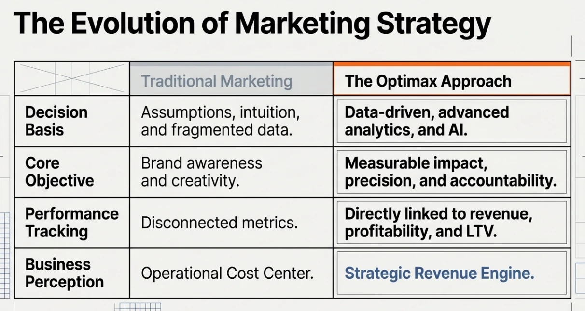
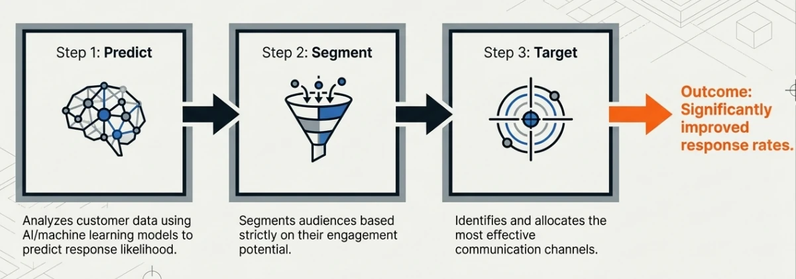
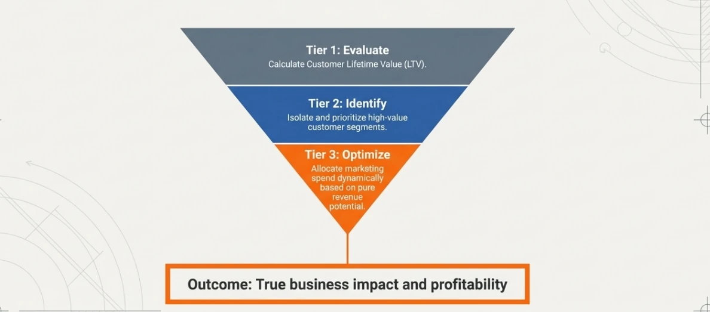
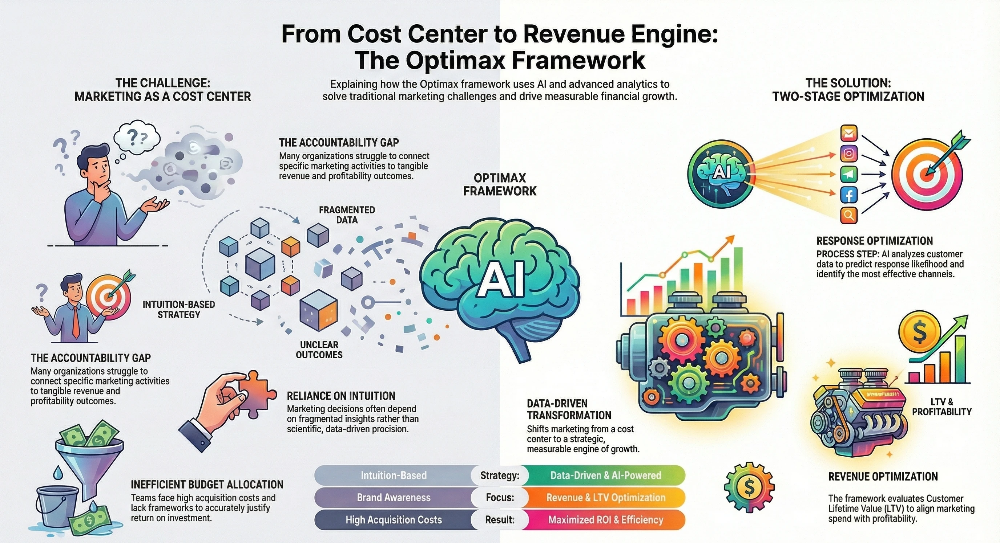

OptiMax, end to end
The data/AI-driven marketing framework — from strategy insights and the conceptual demo to hands-on setup, agentic outputs, and where to buy.
How Can Data and AI Transform Marketing Organizations?
To move beyond the perception of a cost center, marketing organizations need to embrace data-driven strategies and AI-powered solutions. Traditional marketing often struggles to demonstrate tangible ROI. Data and AI can shift this function into a revenue-generating powerhouse — through understanding customer motivations, optimizing marketing spend, and the OptiMax framework for data-driven decision making.
The marketing function involves the research, discovery, and definition of the 4 P's (Product, Price, Positioning, Promotion) in the context of the 5 C's (Company, Customers, Competitors, Collaborators, and Conditions/Climate) — plus a deep appreciation of customer motivations (needs, wants, seasonal demands, emotional content, social status, cultural norms) and constraints (budget, access, channel, mind share, timing).
The questions marketing teams wrestle with
- Who is my target market, and who will buy my product?
- What are my potential customers' motivations — and why do they buy this category?
- What are my product's value propositions and benefits?
- Which channels will customers use, and when do they buy?
- What is my Customer Acquisition Cost by channel and segment?
- What should the price be?
- How do I position my value proposition against competitors?
- How do I segment customers — and vary strategy per segment?
- How can I get to personalized marketing?
- How do I promote the product — what's the communication strategy?
- What is my approach to branding?
In most organizations, marketing is treated as a cost center. Its budget draws hard C-suite questions about relevance to sales, revenue, and cash flow — and executives often lack frameworks to connect marketing activities to revenue. Given the complexity and constraints, this function benefits from a data/AI-driven framework that optimizes resources and justifies ROI with the right KPIs. That framework is OptiMax — it takes constraints such as budget and cost-per-channel into account and optimizes the revenue driven by marketing activities, putting data at the center and using advanced ML models to predict desired outcomes (increase in response, increase in revenue).
From market research to revenue center
- Market research — customer discovery, competitive insights, market sizing (TAM / SAM / SOM), and segmentation. Independent third-party research should be compared with internal understanding to bridge gaps in qualitative KPIs.
- Response & channel optimization — AI/ML models score the entire prospect database, which is segmented and rank-ordered from high to low response. Repeated across channels, this transforms marketing from a cost center into a value-generation center.
- Revenue optimization — a highly responsive customer may not be a highly profitable one. For a given budget, the optimal strategy maximizes customer Lifetime Value alongside response rates. Overlaying prospects across response and LTV segments optimizes revenue and sales under any constraint (cost, channel, time, mindshare).
See the framework in motion
The conceptual demo walks through inputs, random campaign results, response optimization, profitability optimization, and a summary comparison — showing how OptiMax reshapes the same campaign budget into measurably better outcomes.




Up and running on Google Cloud
- Google Cloud Marketplace — find OptiMax on the GCP Marketplace and subscribe through your existing billing account.
- Deploy the virtual machine — OptiMax deploys as a VM inside your own Google Cloud project.
- Navigate the virtual machine — connect to the VM and explore the pre-installed OptiMax framework.
- Learn with "Chocky — The Chocolate Shop" — a complete synthetic-data walkthrough: generate synthetic data, run descriptive statistics, build propensity models, run CLTV models, create OptiMax segmentation, explore media-mix modeling, and experiment with Gen AI — followed by a full OptiMax code analysis.
Real agentic outputs, ready to read
Sample outputs produced by the OptiMax framework and its agentic workflows — opens as PDF documents.
📊 Marketing Campaign Performance
Campaign-level performance reporting.
🎯 OptiMax Response
Response-optimization scoring output.
💬 Agent Chat — Retail
Conversational agent transcript for a retail scenario.
📉 Churn — ABCD OptiMax Agentic Output
Churn analysis produced by the agentic workflow.
📈 Cross-Sell / Upsell — ABCD OptiMax Agentic Output
Cross-sell and upsell recommendations from the agentic workflow.
Put your marketing on the revenue engine
☁️ Google Cloud Marketplace
Purchased and billed directly through your existing GCP billing account.
🗓️ Schedule a demo
Walk through OptiMax with our product team, on your data or the Chocky demo dataset.